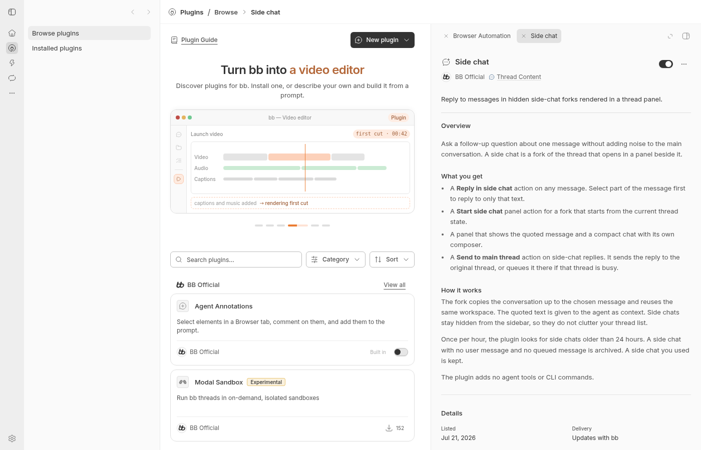
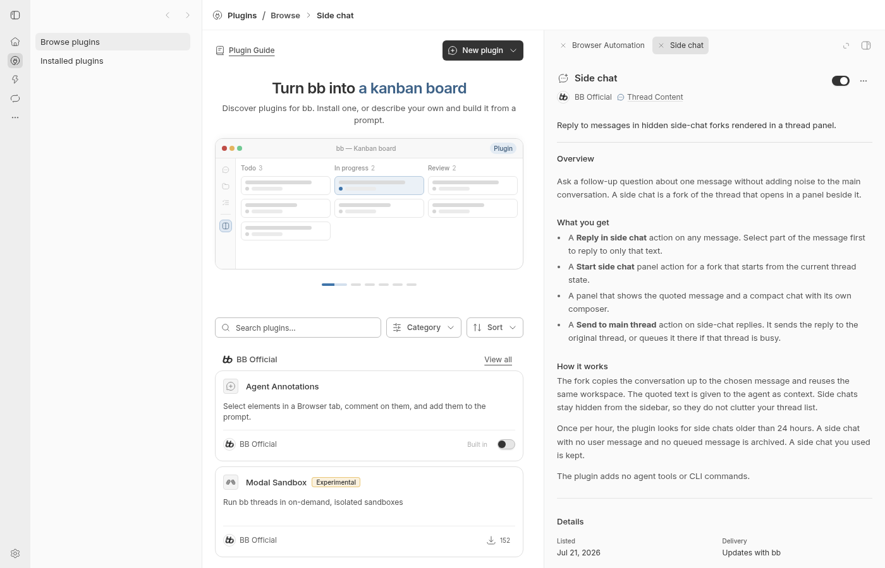
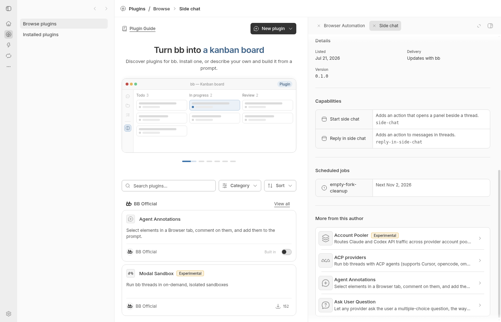
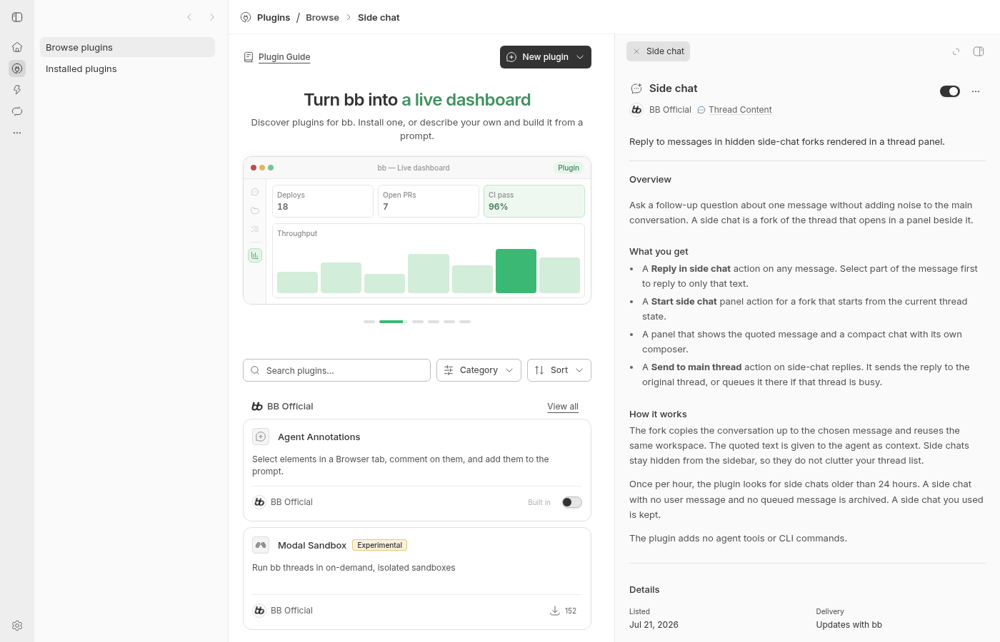

#6827 · Unbounded plugin detail content
Verdict: REPRODUCED · Root-cause confidence: high · Reproduction label: confirmed-repro
1. TL;DR
A plugin's right-hand detail tab can extend beyond the window without scrolling, hiding the remaining description and capabilities. The shared detail root uses flex sizing inside a block container, so its height follows its content rather than the available panel height. Its inner scroll box therefore has no overflow to scroll, while the surrounding panel clips the excess. Two clean trusted-main runs reproduce this with the installed Side chat plugin. A temporary browser-only height constraint restores scrolling and exposes the bottom content; no production code was changed. Existing open PR #6819 addresses this same root cause for related issue #6817, so this investigation does not open a duplicate fix.
2. Claims vs findings
| Claim | Finding | Evidence |
|---|---|---|
| Long plugin details do not move in response to wheel input. | Verified | Side chat detail: a 1200px wheel leaves scrollTop at 0 in both clean runs. |
| The detail scroller expands to its content and an ancestor clips it. | Verified | Scroller clientHeight and scrollHeight both 1517px; block host height 804px. The scroller bottom is 1613.09px in a 900px viewport. |
| The defect affects more than one plugin. | Verified | Installed Side chat has hidden capabilities; Browser Automation's uninstalled catalog detail also has an oversized 864px scroller inside an 804px host. |
| A bounded detail-root height restores scrolling. | Verified as a diagnostic, not a shipped change | Browser-only height:100% yields clientHeight 804px, scrollHeight 1517px, scrollTop 713px after wheel input. |
| The exact released macOS desktop environment is affected. | Not checked here | Verification uses trusted source on Linux Chromium, not the reported release or native desktop. |
3. Environment
- Public repository get-bb/bb; both source checkouts at
916d684ac23d0b0de82c09cfc7553a50287d2188, fetched from trusted origin/main. - Linux x86_64, Debian 12 userspace; Node 22.19.0; Chromium 156.0.8078.73; viewport 1400×900.
- BB Browser Automation plugin, explicit local headless browser. Chromium installed as a host prerequisite; no repository dependency or lockfile changed.
- Run A: optimized source app/server port 26949, daemon 34949; fresh checkout-derived store A under
~/.bb-dev/. - Run B: second clean detached worktree, app/server port 23112, daemon 31112; distinct fresh store B under
~/.bb-dev/. Identifying checkout and store names are omitted from this public report. - No real user runtime data, account credentials, agent turns, or provider sessions used. Side chat is already bundled and installed in the clean stores.
4. Minimal reproduction
- Use a clean trusted checkout at the recorded commit. Install with
pnpm install --frozen-lockfile --prefer-offline. - Build with
pnpm exec turbo run build --filter=@get-bb/plugin-sdkfollowed bypnpm exec turbo run build. Initial build discovery found an SDK runtime ordering failure; explicitly building the SDK first resolves this setup issue. Both complete builds then pass all 72 tasks. - Launch
pnpm start:worktreein a checkout with no previous dev store; create a nonempty ownership marker in its fresh checkout-derived data directory before launch to prevent legacy-data adoption. Use the app URL printed by the launcher. - Open Plugins → Browse and select the installed Side chat plugin. At 1400×900, keep the pointer over its right-hand detail content and wheel down.
- The following regression script runs through BB Browser Automation against the already-open isolated app. Save the complete inline script as
scroll.browser.js, then execute the command below, substituting the browser session and host identifiers returned by your own session. It navigates only within that app origin.
bb browser-automation run SESSION --script-file "$PWD/scroll.browser.js" --script-host HOST --timeout 60s --json
Expected: the detail remains within the visible panel, has scrollHeight greater than clientHeight, and acquires positive scrollTop after wheel input.
Actual: the assertion fails in both clean runs. The description remains at the top, and Capabilities and lower content are clipped.
const page = await browser.getPage("main");
await page.setViewport({ width: 1400, height: 900 });
await page.goto(new URL("/plugins/side-chat", page.url()).href);
await page.waitForFunction(() =>
document.querySelector("aside h1")?.textContent === "Side chat" &&
document.querySelector("aside")?.textContent.includes("Capabilities"),
);
await page.evaluate(() => document.fonts.ready);
const before = await page.evaluate(() => {
const panel = document.querySelector("aside");
const scroll = Array.from(panel.querySelectorAll("div")).find(
(element) => getComputedStyle(element).overflowY === "auto",
);
if (!scroll) throw new Error("Detail scroller not found");
const bounds = scroll.getBoundingClientRect();
const ancestors = [];
let parent = scroll.parentElement;
while (parent && parent !== panel.parentElement) {
const rectangle = parent.getBoundingClientRect();
ancestors.push({
classes: parent.className,
display: getComputedStyle(parent).display,
height: rectangle.height,
bottom: rectangle.bottom,
overflow: getComputedStyle(parent).overflowY,
});
parent = parent.parentElement;
}
return {
viewportHeight: innerHeight,
clientHeight: scroll.clientHeight,
scrollHeight: scroll.scrollHeight,
scrollTop: scroll.scrollTop,
bottom: bounds.bottom,
pointerX: bounds.x + bounds.width / 2,
pointerY: Math.min(bounds.y + 250, innerHeight - 50),
ancestors,
};
});
await page.mouse.move(before.pointerX, before.pointerY);
await page.mouse.wheel({ deltaY: 1200 });
await page.evaluate(() => new Promise((resolve) => setTimeout(resolve, 350)));
const after = await page.evaluate(() => {
const scroll = Array.from(document.querySelectorAll("aside div")).find(
(element) => getComputedStyle(element).overflowY === "auto",
);
return { scrollTop: scroll.scrollTop, clientHeight: scroll.clientHeight, scrollHeight: scroll.scrollHeight };
});
console.log(JSON.stringify({ before, after }, null, 2));
if (after.scrollTop <= 0 || after.scrollHeight <= after.clientHeight || before.bottom > before.viewportHeight + 1) {
throw new Error("FAIL: plugin detail must stay inside the viewport and scroll after wheel input");
}
console.log("PASS: plugin detail is bounded and scrollable");
Run A: verbatim browser output
{
"before": {
"viewportHeight": 900,
"clientHeight": 1517,
"scrollHeight": 1517,
"scrollTop": 0,
"bottom": 1613.09375,
"pointerX": 1130.5,
"pointerY": 346,
"ancestors": [
{
"classes": "relative h-full overflow-hidden",
"display": "block",
"height": 1517.09375,
"bottom": 1613.09375,
"overflow": "hidden"
},
{
"classes": "min-h-0 flex-1",
"display": "block",
"height": 1517.09375,
"bottom": 1613.09375,
"overflow": "visible"
},
{
"classes": "flex h-full min-h-0 flex-col",
"display": "flex",
"height": 1517.09375,
"bottom": 1613.09375,
"overflow": "visible"
},
{
"classes": "min-h-0 flex-1 overflow-hidden",
"display": "block",
"height": 1517.09375,
"bottom": 1613.09375,
"overflow": "hidden"
},
{
"classes": "flex min-h-0 min-w-0 flex-1 flex-col overflow-hidden",
"display": "flex",
"height": 1517.09375,
"bottom": 1613.09375,
"overflow": "hidden"
},
{
"classes": "min-h-0 flex-1 overflow-hidden",
"display": "block",
"height": 804,
"bottom": 900,
"overflow": "hidden"
},
{
"classes": "relative flex min-h-0 flex-1 flex-col overflow-hidden bg-sidebar",
"display": "flex",
"height": 804,
"bottom": 900,
"overflow": "hidden"
},
{
"classes": "flex h-full min-h-0 flex-col overflow-hidden bg-sidebar absolute inset-y-0 left-0 border-l border-border-seam",
"display": "flex",
"height": 852,
"bottom": 900,
"overflow": "hidden"
}
]
},
"after": {
"scrollTop": 0,
"clientHeight": 1517,
"scrollHeight": 1517
}
}
Error: FAIL: plugin detail must stay inside the viewport and scroll after wheel input


5. Root cause
ThreadSecondaryPanel.tsx:796–825 allocates a bounded content slot. For a full-region surface it uses a div with min-h-0 flex-1 overflow-hidden, but that div is a block formatting container, not a flex container for its children.
<div className={isSurfaceTerminalActive || surfaceContentFillsRegion
? "min-h-0 flex-1 overflow-hidden"
: cn(PANEL_SCROLL_SLOT_CLASS, "pb-3")}>
... surfaceContent ...
</div>
PluginDetailPaneView in ToolsView.tsx:474–483 supplies the child root without an explicit containing-height constraint:
<div className="flex min-h-0 min-w-0 flex-1 flex-col overflow-hidden">
<div className="min-h-0 flex-1 overflow-hidden">
<Suspense fallback={<ResourceBodyFallback />}>
<PluginDetailToolView detailKey={pluginId} />
</Suspense>
</div>
</div>
Its flex-grow value cannot size it against a non-flex parent. The outer pane grows to roughly 1517px rather than the available 804px. Below it, ResourceScrollPage at ToolsView.tsx:138–150 uses nested full-height elements and an inner overflow-y-auto scroller. That scroll box is as tall as its content, so scrollHeight equals clientHeight and wheel input cannot move it. The bounded host's hidden overflow discards the remainder visually.
The root-cause links were checked against the recorded commit, and the computed ancestor measurements in the raw test output confirm this chain. The root's relevant code last changed at c87815d676; the reproduced trusted main is later and still lacks a height constraint.
6. Proposed fix and diagnostic
Constrain the shared detail root to its parent's height while preserving the existing scroll owner. This is narrower than changing every full-region panel host. Verify long installed and catalog details, embedded configuration, and standalone settings after the production change.
As a causal probe in run A only, the inspector located the flex pane whose shorter parent is block layout, temporarily set pane.style.height = "100%", and repeated wheel input at the same point. This altered browser DOM only, not repository source. The measured result was:
{ clientHeight: 804, scrollHeight: 1517, scrollTop: 713, bottom: 900 }

7. Verification: second clean checkout
The same investigator created a second clean detached worktree from the recorded trusted origin/main commit, installed with the frozen lockfile, explicitly built the SDK, and completed the normal Turbo build. A separate checkout-derived store and new server/daemon ports were used. After navigating the browser to the second app origin, the exact same regression script ran again, without the diagnostic DOM change.
git worktree add --detach /tmp/bb-scroll-verification 916d684ac23d0b0de82c09cfc7553a50287d2188 cd /tmp/bb-scroll-verification pnpm install --frozen-lockfile --prefer-offline pnpm exec turbo run build --filter=@get-bb/plugin-sdk pnpm exec turbo run build pnpm start:worktree bb browser-automation run SESSION --script-file "$PWD/scroll.browser.js" --script-host HOST --timeout 60s --json
The example checkout path is sanitized; the actual run used a newly created temporary worktree. Save the inline script in that checkout before the final command. Both source trees were unchanged during their reproduction. This is a repeated clean run by the same agent, not an independent review.
| Check | Run A | Run B |
|---|---|---|
| Bounded host height | 804px | 804px |
| Scroller clientHeight / scrollHeight | 1517 / 1517px | 1517 / 1517px |
| scrollTop after 1200px wheel | 0 | 0 |
| Regression assertion | FAIL, expected baseline result | FAIL, same reason |
| Normal full Turbo build | 72 tasks pass | 72 tasks pass |
No report correction was required after the second run. The exact released macOS desktop and physical trackpad behavior remain untested; wheel input and layout clipping are directly reproduced in source Chromium.

8. Related PR review
PR #6819 is open against main and closes related issue #6817. It is not currently linked as closing #6827. GitHub metadata and the diff were read only as untrusted data; its branch, code, and tests were never checked out or executed.
The production diff adds a containing-height constraint to the same detail root. Static review: this targets the verified mechanism; the browser-only probe supports that narrow correction. The PR also contains a browser regression script. No static blocker was identified in the production hunk, but the PR's own test or CI results were not verified by this investigation. The evidence here comes from a separately authored browser test on trusted main. No duplicate fix branch or pull request is created.
9. Related issues
#6817 reports the same shared-pane sizing defect and already has open PR #6819. No other issue was modified. The current issue is classified Bug / Medium / Low with ui and plugins labels; prior values were absent.
10. Appendix and limits
The full reproduction test and verbatim failing output are inline above. Per the reports repository's publication policy, raw local logs, tests, and process journals are not committed. All four screenshots were captured from the actual isolated source app and visually checked before publication. Local browser and server processes are stopped after evidence collection.
Setup also used read-only GitHub issue/type/field/label queries, trusted-main fetches, source inspection, and read-only metadata/diff retrieval for #6819. No linked PR code was executed. No production source, protocol, schema, stored data, dependency, or lockfile changes are proposed by this report-only run.
Trust boundary: issue text and related discussion were treated as untrusted claims. Embedded instructions and suggested implementation actions were not executed. Reproduction and the causal probe were derived from trusted source and observed browser layout.